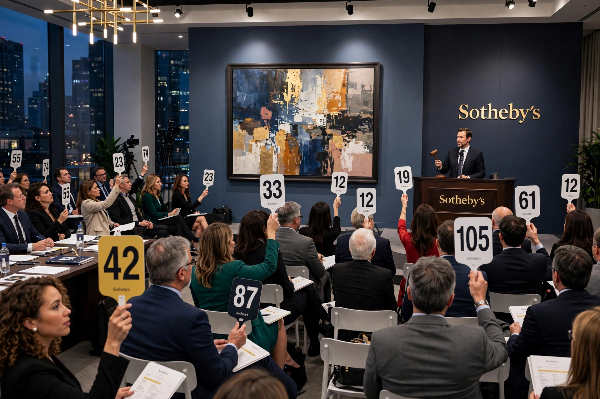

Sotheby's
Sotheby's is a multinational corporation of auctioneers headquartered in New York City, founded in London in 1744. It is one of the world's largest brokers of fine and decorative art, jewellery and collectibles, and together with Christie's forms the dominant duopoly of the international art auction market. Since 2019 it has been privately owned by the telecoms and media magnate Patrick Drahi.

| Sotheby's | |
|---|---|
| Founded | 11 March 1744, London |
| Founder | Samuel Baker |
| Headquarters | York Avenue, New York City |
| Owner | Patrick Drahi (since 2019) |
| Industry | Fine art and luxury auctions |
History
Bookseller Samuel Baker held his first book auction in London in 1744; the firm took the name Sotheby from Baker's nephew and partner John Sotheby. For two centuries Sotheby's was primarily a book auctioneer, while pictures were left largely to Christie's. The balance shifted after the First World War, and under chairman Peter Wilson in the 1950s–60s the firm aggressively expanded into paintings, acquiring New York's Parke-Bernet Galleries in 1964 and moving its centre of gravity toward the American market.
Sotheby's was listed on the New York Stock Exchange from 1988. In 2000 its chairman A. Alfred Taubman was convicted in the commissions price-fixing scandal shared with Christie's. In 2019 Patrick Drahi acquired the company for $3.7 billion and took it private; the house subsequently acquired the Breuer Building in New York as a new headquarters.
Notable sales
Sotheby's has handled the sales of many record works, including Edvard Munch's The Scream (1895 pastel version) for $119.9 million in 2012, then a world auction record, and sustained the market for Impressionist, modern and contemporary art through its London and New York evening sales. It also runs Sotheby's Financial Services, lending against art, and has expanded into luxury retail, wine and classic cars (RM Sotheby's).
See also
Recreated from memory as part of the muse-webcrawl project.